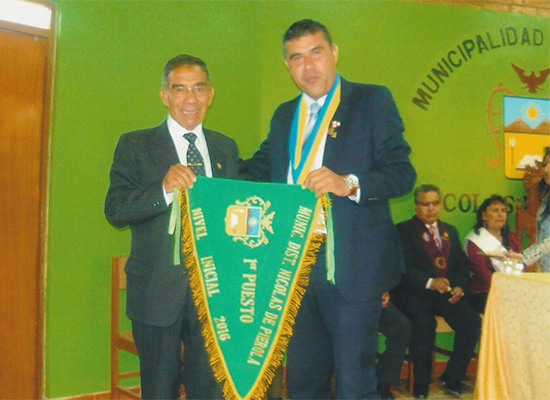

VISIÓN y MISIÓN

VISIÓN
Brindar una educación de calidad que motive y estimule el aprendizaje de los estudiantes, elevando la autoestima y el espíritu asumiendo una educación en valores; y a la vez desarrollar habilidades y capacidades formando así niños y niñas críticos y creativos, capaces de resolver problemas; debiendo contar con personal calificado, comprometido e identificado con su vocación de servicio, propiciando un estilo de aprendizaje democrático, que promueva un clima institucional favorable y que involucre a todos los miembros de la comunidad educativa.
MISIÓN
Somos una Institución Educativa Privada que brinda formación integral a los niños y niñas del nivel inicial, promoviendo sus capacidades y fortaleciendo la adquisición de conocimientos y valores por medio de juegos dirigidos; se cuenta con personal docente debidamente calificado con vocación de servicio identificado con la Institución; y, siendo necesario promover en los padres de familia su participación comprometida para con la formación de sus menores hijos.